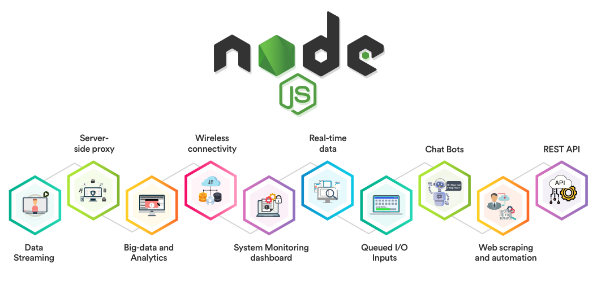

What is Node JS?
Node.js is an open-source, cross-platform, back-end, JavaScript runtime environment that executes JavaScript code outside a web browser.
Node. js is a platform built on Chrome's JavaScript runtime for easily building fast and scalable network applications. Node. js uses an event-driven, non-blocking I/O model that makes it lightweight and efficient, perfect for data-intensive real-time applications that run across distributed devices.
- Easy learning curve Knowing JavaScript gives a developer a good start with Node.js. Of course, you need to know the backend development principles, however, the knowledge of the programming language will simplify things a lot.
- Large community Node.js, being an open-source project, encourages support and contribution aimed at the improvement and adoption of the platform. This is the mission of its Foundation intended for continuous development and enhancement of Node.js. Therefore, you can be sure that, on one hand, Node.js is always getting better and, on the other hand, there is already a lot of reusable resources.
- Robustness Using Node.js allows organizing full stack JavaScript development ensuring the speed and performance of the application.
- Scalability This is a true jewel of the Node.js development environment, as it allows building applications that can easily grow with your business. Node.js works great in systems using the microservices architecture or containerization where the scalability and flexibility can be achieved quickly and easily.
When do you use Node?
Real-time applications. As we have found that Node.js can ensure great speed and performance, one of the textbook Node.js use cases is real-time messaging, or chatting. The environment can support intense traffic of multiple short messages, or chatrooms when messages are displayed to many users at the same time.
The second reason when to use node would be for Data streaming applications. The term “streaming” means exactly that – sending large amounts of data in smaller packages instead of a single batch. This ability is especially critical for audio or video streaming applications. Node.js is perfectly suited for this task with built-in modules supporting data streaming and allowing to create both readable and writable data streams. If we add that Netflix, a global media service provider, uses Node.js, you may get the idea of how powerful this environment is.
The Third reason when to use node would be for Collaborative tools. This Node.js use case example is also related to its ability to process real-time flows. You should have heard of Trello, a project management application that is rather popular with software development companies. Well, Trello was developed on the basis of Node.js and benefited from its event-driven, non-blocking model. Node.js is great for applications requiring immediate updates, such as various collaboration tools and online documentation suites.
The Last reason when an Application relying on scalability. The superb scalability supported by Node.js answers the “why Node.js” question for apps required to withstand high peak loads. This is the reason why Uber chose Node.js to develop its app. The global taxi network is always growing and expanding its presence; at the same time, the nature of the taxi business causes high demand peaks during holidays. Node.js handles these challenges quite well.
What are some ways that Node differs from JS in the browser?
Unlike the browser where Javascript is sandboxed for your safety, node. js has full access to the system like any other native application. This means you can read and write directly to/from the file system, have unrestricted access to the network, can execute software and more.
What is Express JS?

Express.js, or simply Express, is a back end web application framework for Node.js, released as free and open-source software under the MIT License. It is designed for building web applications and APIs. It has been called the de facto standard server framework for Node.js.
Why would a developer choose to use a Templating Engine?
A developer might use and should use a Template engines, like Smarty and Twig, to better performance with compiled files, which is another caching layer for the web application. So with the template caching you can save time in rendering your template to the browser which will boost your website page speed and development time spent on layout.
What Templating Engine did you choose and why?
I picked Handlebars JS since its the most common templating engine and its compiles templates into JavaScript functions. This makes the template execution faster than most other template engines.